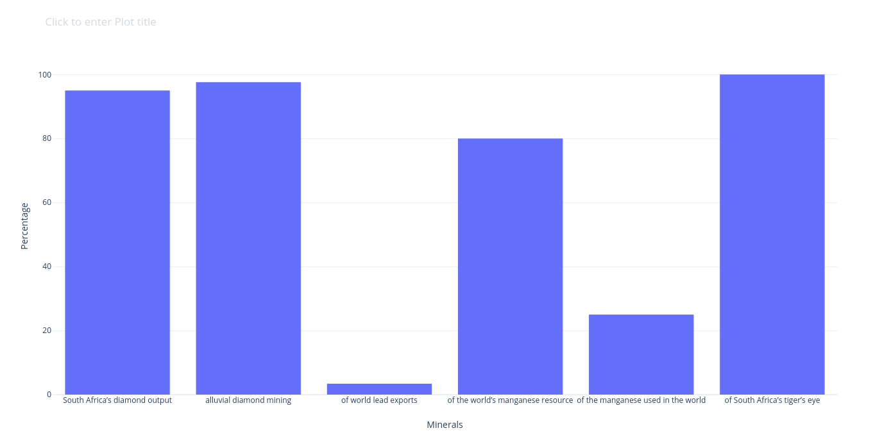

Rare earth elements (REE) are a very modern mineral, in that large parts of the modern economy rely on them. Super-conductors, X-ray machines, nuclear batteries and PET-scan detectors are
just some of the technologies that rely on rare earth elements such as promethium, thulium and holmium. China controls 95% of the world’s supply of REEs and the search is on for alternative
sources. Two sites in western South Africa have attracted investors attention: Zandkopsdrift (Northern Cape) and, close by but in the adjoining province of the Western Cape, Steenkampskraa
Another change took place in the diamond ownership environment in 2018 when Ekapa Mining paid R300-million to buy out Petra Diamonds from its Kimberley Ekapa Mining Joint Venture (KEM JV).
Petra held 75.9% of the old De Beers assets that include Kimberley Underground Mines, various dumps around the town and underground resources at Bultfontein, Dutoitspan and Wesselton.
Ekapa’s plans to keep the mines and tailings in profit entail the use of modern technology. This includes an automated pan plant in support of an upgraded Combined Treatment Plant.
Quartz is used in the manufacture of semiconductors, fibre-optic cables and ceramics. Fused quartz improves the efficiency of solar powered devices and quartz glass is used in the
manufacture of photovoltaic cells. Positive tests have been done at Riemvasmaak where the silica content is 99.98% in some places. Difeme, a black start-up, will mine the quartz with technical help
from Mintek. Investors are sought for the development of a processing and beneficiation plant for high-purity quartz
In 2019, Sitatunga Resources purchased the East Manganese project on the Hotazel-Kalahari ore belt from Southern Ambition. Menar Holdings, which controls a majority share in Sitatunga, is mostly invested in coal.
Afrimat, a listed construction materials supplier and industrial minerals group, has added open-pit mining to its portfolio with the R322-million acquisition of the Diro mine, which had been in
business rescue. The Diro mine has proven run-of-mine reserves of 10-million tons.
